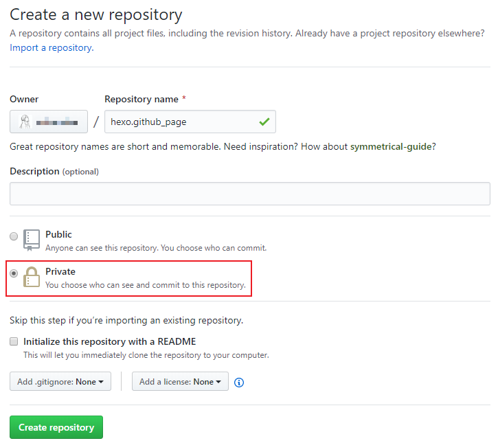
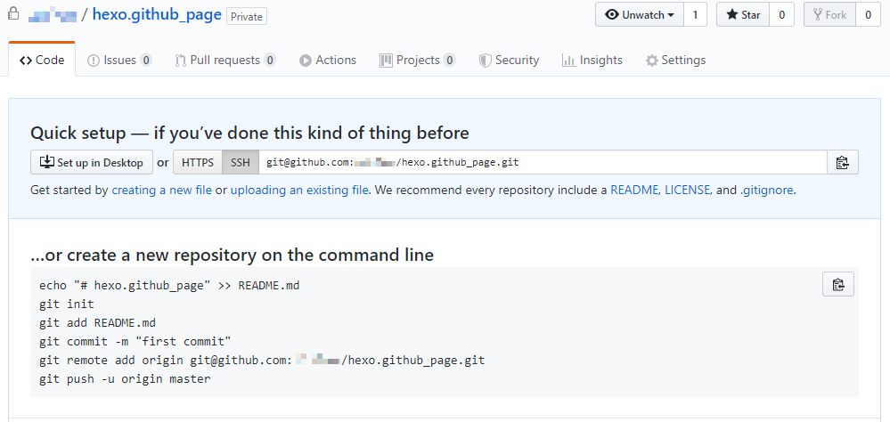
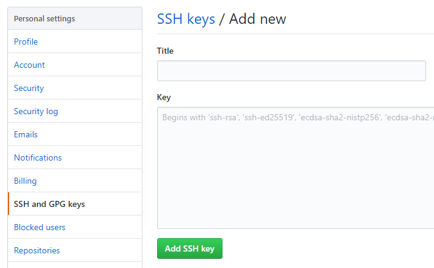
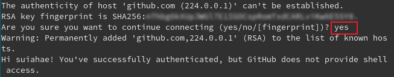

多终端私密同步 hexo 博客
Multi-terminal private synchronization hexo blog
Changelog
data: 2020-05-24
Added
- 增加 Fedora 和 yarn 的使用
Fixed
- 修复了一些错误
一. 原电脑配置
1. 准备工作
1.1 新建私人库
在微软巨硬收购GitHub后，用户可以免费创建不超过3人的私有库，这使我们私密同步hexo成为了可能

1.2 复制git地址
推荐使用SSH链接以避免不必要的麻烦

1.3 修改.gitignore文件
首先需要了解下hexo目录下各文件（夹）功能
node_modules:npm安装的hexo依赖包public：hexo编译后网站生成的目录文件scaffolds：生成文章/页面的一些模板source：用来存放你的文章themes：主题.deploy_git：git部署所用的文件_config.yml:博客的配置文件db.json：数据库管理文件按需修改.gitignore
在使用
hexo init <name>语句时会在hexo目录下自动生成.gitignore文件（hexo init原理是将存放于github中的hexo-starter模板clone至本地再作修改初始化）,初始值：
1
2
3
4
5
6
7.DS_Store
Thumbs.db
db.json
*.log
node_modules/
public/
.deploy*/修改为：
1
2
3
4
5
6
7
8
9
10
11.DS_Store
Thumbs.db
db.json
*.log
node_modules/
public
.deploy*/
yarn-error.log
yarn.lock
themes/landscape
*.code-workspace
1.4 删除主题下.git文件夹和.gitignore文件
检查themes文件夹下个目录文件，如果使用的主题是通过git clone克隆下来的，需要先将主题下的.git文件夹和.gitignore文件删除，否则之后hexo文件夹将无法进行同步
1 | themes/<yourtheme> |
2.参照步骤1.2中附图操作
1 | # 1) 初始化本地仓库 |
二. 同步端配置
1. 安装必备环境git, nodejs, hexo
1.1 在arch & npm上安装 (yay 是 arch 的一个包管理程序, 相当于 ubuntu 的 apt)
安装 Git Node.js npm
1 | yay -S git nodejs npm |
配置 npm 源
1 | npm config set registry https://registry.npm.taobao.org |
将以下内容添加至 ~/.bash_profile ( 或 ~/.zshrc) 文件首
1 | PATH="$HOME/.node_modules/bin:$PATH" |
安装 hexo
1 | npm install -g hexo-cli |
1.2 在 fedora & yarn 上安装
安装 yarn 和 Node.js
1 | curl --silent --location https://dl.yarnpkg.com/rpm/yarn.repo | sudo tee /etc/yum.repos.d/yarn.repo |
配置 yarn 源
1 | yarn config set registry https://registry.npm.taobao.org |
1 | # 设置安装路径 |
安装 hexo
1 | yarn global add hexo-cli |
添加一些插件
1 | yarn add hexo-deployer-git |
2. 将仓库clone至本地
2.1 配置 Git 并添加 SSH
配置 Git
1 | # 将 yourname 和 youremail 替换成 GitHub 用户名和邮箱 |
创建 SSH
1 | ssh-keygen -t rsa -C "youremail" |
查看 SSH 公钥内容
1 | cat ~/.ssh/id_rsa.pub |
在 GitHub 设置界面添加 SSH key

本地连接测试
1 | ssh -T git@github.com |
此时会询问是否继续连接, 输入yes即可

2.2 将仓库clone至本地
1 | git clone git@github.com:<yourname>/hexo.github_page.git <foldername> |
三. enjoy it !
由于已经把 hexo 配置文件同步至 GitHub, 无需进行 hexo init githubpage 操作.
1 | npm install |
推荐每次编写博客都进行git同步
1 | # 1) 拉回远程仓库的更改 |